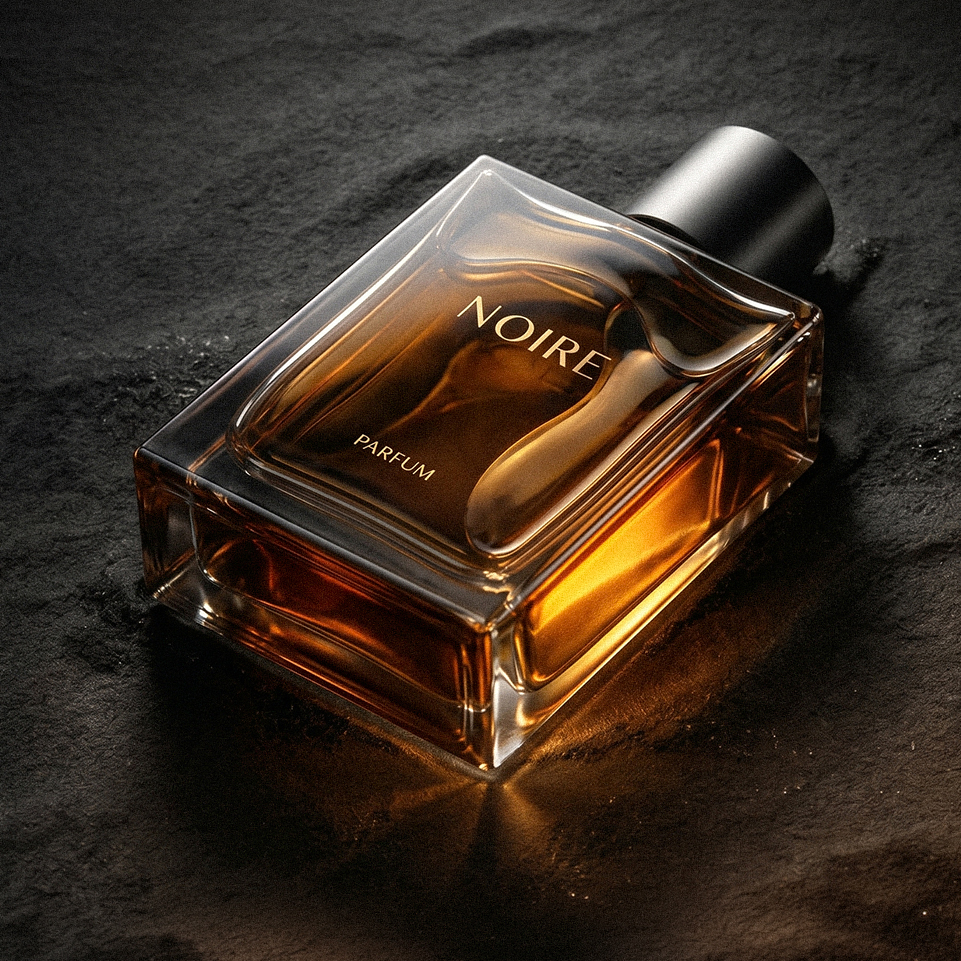
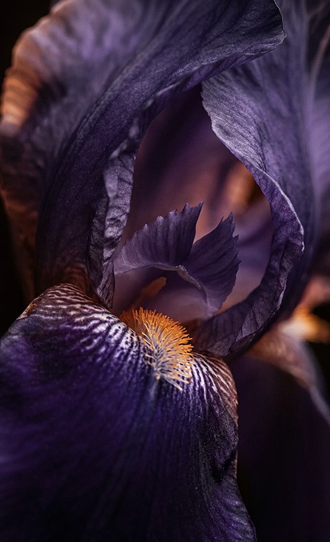
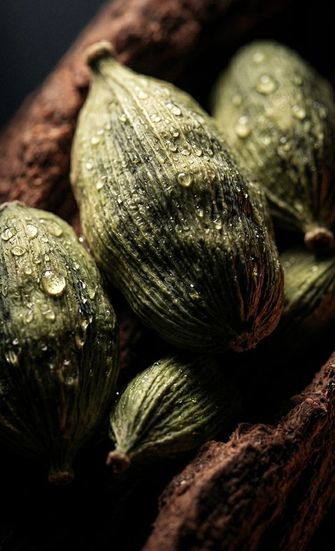
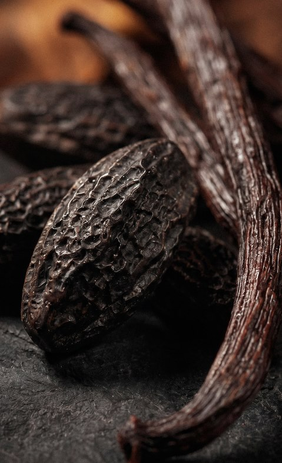
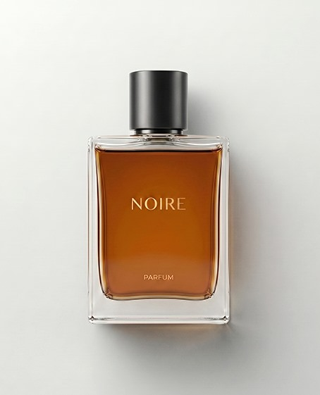
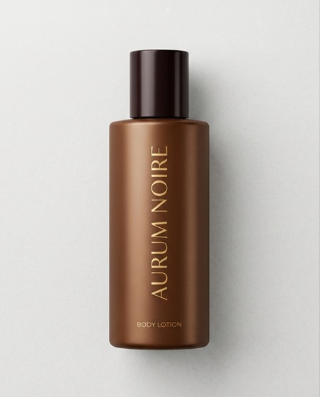
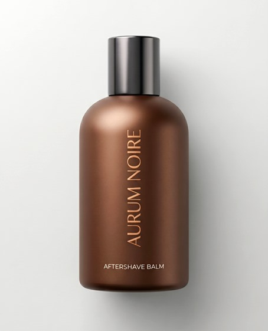
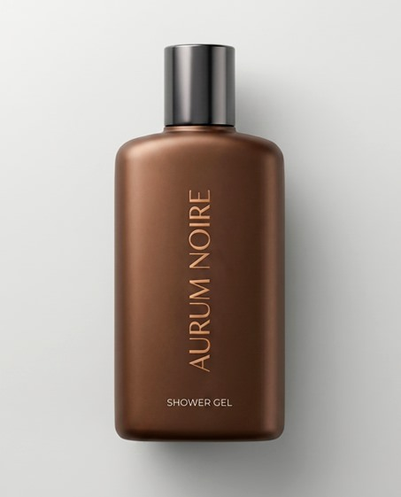

Aurum Noire
For Men Parfum
AURUM NOIRE is masculinity without explanation — composed for evenings that matter, encounters that stay. It opens with spiced precision, settles into polished warmth, and ends as something closer to skin than scent. Dark. Controlled. Unforgettable on its own terms.
A Study in Controlled Intensity
From the cool elegance of iris and neroli to the textured warmth of tonka, vanilla, and labdanum, AURUM NOIRE is shaped like a structure: clear, masculine, and enduring.



An Object of Presence
AURUM NOIRE embodies a new language of masculine luxury: precise, sensual, and composed. Every detail — from the amber liquid to the dark cap and clean silhouette — reflects a fragrance built on restraint, depth, and desire.
Discover AURUMMore than one signature.
The AURUM Collection
Not a single expression, but a study in contrast.
Each composition explores a different shade of presence — from light to depth, restraint to intensity.
Beyond the Fragrance
AURUM NOIRE extends from scent into skin, water, and touch — a darker ritual of modern refinement.



